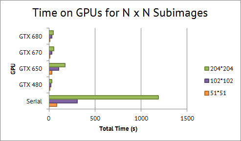

Summary
We have implemented a parallel program to create photomosaics using Instagram photos, and have explored how to reuse data in the subtiles to save image storage space.
Background
Instagram has a huge database of photos, many of which have filters applied that give them a similar hue, saturation, brightness, etc. Photomosaics are a popular way to display a photo using many subphotos where each subphoto acts as a "pixel" in the overall image. Photomosiacs of Instagram photos could be very intersting, and with the filters applied, make very high quality photomosaics. This also brought out another topic to be explored in the form of data compression. Professor Kayvon challenged us with trying to find out if new images uploaded to Instagram could use old image data to recreate this new image pixel for pixel without storing any new data.
Photomosaics are trivially parallelizable because each subimage of an input image can be done in parallel. If you include the requirement that each photo tile must be unique, things become a bit trickier, as modifying an array of images while other threads are accessing them can still produce duplicate images. When creating photomosaics for aesthetics it is much better to remove duplicates as it provides a much more interesting result. When figuring out whether or not it is possible to find an image that matches pixel for pixel, having duplicates is necessary to ensure we consider all images in the database.
The next challenge comes from determining the best number of pieces to cut the image and subimages into to match to. We started with cutting the input image into 51 x 51 subimages and subimage tile into another 3 x 3 grid. When we started looking for exact matches, we realized that cutting the overall image into a much larger number of subimages would increase the probability that an exact match could be found. We have currently run matches on subimages with size 3 x 3 with very high success rate in finding exact matches. We plan to expand this to different dimensions to see which ones return the best results.
High Level Algorithm
Load provided image
Slice image into squares of equal size
for each sub-image in parallel:
slice sub-image into grid
store average RGB values of grid pieces into an array
for each stored photo in parallel:
compare RGB values with grid and update current best match
syncthreads
add photo pixels to shared final image buffer
Approach
We originally planned to use Python for this project (see proposal), and parallelize the computations for image matches using PyCUDA, but ran into quite a few roadblocks on that path. Our serial Python version of generating image mosaics with a database of ~6,000 images required over 3 minutes of computation time. We realized this time would only grow exponentially if we wanted to use a database of over 100,000 images. We decided to continue for the time being and utilize PyCUDA to start attempting to speed up the implementation before adding any more images. After reading extensive documentation and “successfully” running our code, the result we achieved was crashing our computer. At this point, we decided to start from scratch with C++.
The work required to partition our images is done within our imageSlicer class, which utilizes the ImageMagick library for image manipulation. This class defines functions that slice the input image into subimages, and divides these subimages into the grids that we average over for image matching. Each of these grid tiles is then averaged into one (R,G,B) value, giving us multiple data points per subimage to find the overall closest match. We are currently exploring the best grid size to maximize match and minimize overhead.
The final mosaic is currently composed in serial_pm. Finding the closest (R,G,B) values is equivalent to finding the shortest path between one point and all other given points in 3D space. For each subimage, we calculate the closest match from our image database, given by √((r1 - r2)2 + (g1 - g2)2 + (b1 - b2)2). To ensure uniqueness in our images, as we discussed earlier, we remove an image from the database whenever it has been found as a closest match. In this serial version, we find all image matches first and then montage the images with the returned paths. We first used ImageMagick's Montage class to tile the images.
The first optimization was to write our own image tiler using libjpeg, since ImageMagick's class is not user-parallelizable and carried unneeded features. Our new image tiler class accepts an image path and an index integer indicating its position in the final mosaic, so we don't have to write images serially.
The next optimization was to parallelize finding closest matches for each subimage using CUDA. Given the CPU-intensive nature of finding matches, we hope to make these computations faster and achieve an even greater speedup. We will also look into reusing data for the images.
Results
Photomosaic Results
Now that our database now has over 100,000 images, our final results have improved in terms of aesthetics. In terms of other matters, such as serial computation time, the results have, unsurprisingly, significantly increased. However, given the preliminary results, were obtained from the Python implementation, there was a natural speedup when switching to C++. It now takes on average 0.05 seconds to find the closest image match, 130 seconds to find all matches, and 5 seconds to compose the final mosaic.
When comparing our final mosiacs to our preliminary results, we see a significant improvement in details and colors (click the mosaiced image on the right to view the full size image):


These tables show our speedups on various GPUs based on number of subimages we cut our image into:
51 x 51 = 2,601 images
| Python Serial | C++ Serial | CUDA/GTX 480 (15 SMs) |
CUDA/GTX 650 (2 SMs) |
CUDA/GTX 670 (7 SMs) |
CUDA/GTX 680 (8 SMs) |
|
|---|---|---|---|---|---|---|
| All Matches (s) | 4200 | 75.2 | 4.3 | 25.3 | 6.9 | 6.4 |
| Total Time* (s) | 4220** | 83.2 | 9.3 | 30.3 | 11.9 | 11.4 |
| Speedup | xx | 1x | 9.1x | 2.7x | 7.0x | 7.3x |
102 x 102 = 10,404 images
| Python Serial | C++ Serial | CUDA/GTX 480 (15 SMs) |
CUDA/GTX 650 (2 SMs) |
CUDA/GTX 670 (7 SMs) |
CUDA/GTX 680 (8 SMs) |
|
|---|---|---|---|---|---|---|
| All Matches (s) | 296 | 15.1 | 98.8 | 27.1 | 24.8 | |
| Total Time* (s) | 304 | 20.1 | 103.8 | 32.1 | 29.8 | |
| Speedup | xx | 1x | 15.1x | 2.9x | 9.5x | 10.2x |
204 x 204 = 41,616 images
| Python Serial | C++ Serial | CUDA/GTX 480 (15 SMs) |
CUDA/GTX 650 (2 SMs) |
CUDA/GTX 670 (7 SMs) |
CUDA/GTX 680 (8 SMs) |
|
|---|---|---|---|---|---|---|
| All Matches (s) | 1180.7 | 25.4 | 169.4 | 46.0 | 42.0 | |
| Total Time* (s) | 1188.7 | 30.4 | 174.4 | 51.0 | 47.0 | |
| Speedup | xx | 1x | 39.1x | 6.8x | 23.3x | 25.3x |
* Additional 3 seconds to load remote database of images and 2 seconds to tile (5 for serial)
** Python tiled images in 18s
Graphs

Our best achieved speedup was 39.1x on the GTX 480. At first, it was curious as to why our best speedup wasn't on the GTX 680s, but we realized since our operations are computationally intensive, they benefitted more from the higher parallel capabilities from having more SMs, which are like ALUs.
Tile Reuse
While creating our mosaics, we studied the possibility of reusing the smaller tiles we cut each image into to recreate new images pixel for pixel. This could potentially save a lot of storage space if a lot of sliced tiles match pixel for pixel to the new tiles created in an input image. Our algorithm is built on using 3 x 3 pixel tiles, so we decided to look at these first. The image of us eating ice cream in our results section has enough of a black border on it that over 20% of the image can be made from the same black tile. The jellyfish image on the other hand, had 0 matches to the almost 1,000,000 stored tiles in our database. We then considered the probability of two tiles matching: Two tiles with 9 RGB values each have a probaility of 1/(256*256*256*3*9) chance of matching since each of the 3 RGB values take on 1 of 256 possible values, and there are 9 RGB values per tile. This is an extremely low possibility to the point where it is so unlikely to happen that storing the tiles would not be beneficial to storage. Any smaller tile size would not offer any benefit to storage as they aren't large enough to offset the original cost of storage, and any larger tile size would have an even smaller probability of exactly matching. Thus, it is clear that any tiles besides pure black and pure white would not be helpful.
Division of Work
We pair programmed and worked on this entire project together. Tyler handled more of the database and Instagram scripts and Stephanie worked with the image tiler. In fact we are currently sitting next to each other writing this. Here is a mosaiced picture of our beautiful faces :)